Project
Design Concept
Year
2021
Disciplines
UX Design, UX Research, UI Design
Welcome To Clean Audio
Hart Audio Cables is a small, boutique aftermarket audio cable manufacturer. They are cult favorite amongst audiophiles and come highly recommended wherever you look. However, their purchasing experience is not friendly to new hobbyists due to the technical nature of the product. This concept was designed as an introductory experience to first time Hart Audio Cable buyers.

Empathize
I first sought to understand how people felt about the hartaudiocables.com current purchasing process. Where were the pain points and issues, and is there even a problem to solve?
HAC's products have quickly become a favorite aftermarket cable supplier of a significant portion of the high-end headphone community. You will very regularly see their name mentioned in recommendations as well as user reviews. While experienced audiophiles will have no problems understanding HAC's unique approach to headphone cables, amateurs to the hobby and first time buyers may struggle to understand how to purchase a proper cable set, and which cable set to purchase. HAC has acknowledged this as a potential issue on their website and offers customers the opportunity to direclty email them. While a solution, this process is entirely manual and adds a large delay on the purchasing process.
The question was: could a simplified, approachable, and intuitive purchasing experience better educate and encourage new users into purchasing HAC's products, as well as alleviate manual labor from HAC's small team?
To answer these questions, I found 5 users who have not used heartaudiocables.com but were technically familiar with the items. These users were found in various ways, including online forums and personal acquantainces and all willingly chose to volunteer their time for the benefit of this study.
User Testing
Users were given a pair of headphones (Hifiman Sundaras) and asked to find the appropriate cable replacement and it to their cart. After, they were asked a series of qustions.
Key Takeaways
• 40% of testers felt they had chosen the right product.
• 20% of testers felt like they understood the buying process.
• It took an average of 11 minutes to complete the test.
• Current site is overly verbose. A large portion of the site is uninterrupted text with no variation or emphasis, discouraging testers from reading.
• Requiring the user to seek out two different items in two different locations in order to create a viable product was a major pain point.
• Proprietary code names are used to classify all of the interconnect and headphone cable types, which caused additional confusion for the majority of testers.
The Problem
While Hart Audio Cables offers unique and high quality aftermarket audio cables, their unusual purchasing process and customer terminology can be intimidating for new users who can easily get overwhelmed.
Ideate
After user research had completed, there were three main goals I wanted to achieve:
• Simplify/consolidate the purchasing process
• Provide more information during the purchase process
• Reduce overall learning curve/time to purchase
User Persona
Jeremiah Lopez
32 years old • Accountant • Masters of Finance, UNLV
Jeremiah is a reserved person with a passion for music. He's somehwat of a homebody, and he cares a lot about his living space. Jeremiah was recently introduced to "head-fi" by a friend and has decided to purchase an audio setup of his own. After careful research, Jeremiah decided to purchase the Hifiman Sundara's as his first pair of audiophile-grade headphones. Throughout his research on the subreddit r/headphones, he noticed many people recommended getting a replacement headphone cable from a website called heartaudiocables.com. He decided to visit the website and get a new cable.
User Flow Chart
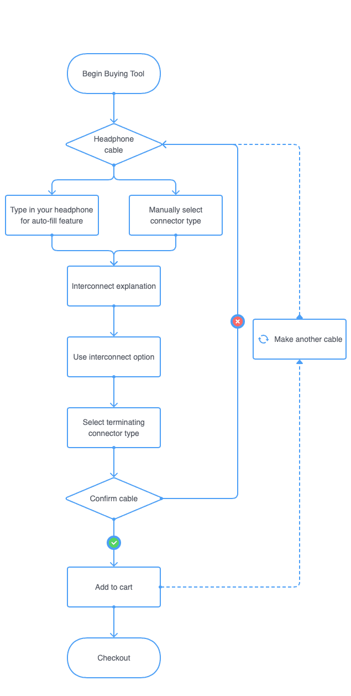This user flow chart describes the steps the user will take in purchasing a new cable from hartaudiocables.com. The process defined here is a mixture of the current process as well as new processes that were devised during the ideation process. This chart will guide the low fidelity prototype designing process.
Low Fidelity Prototype
After low-fi prototypes were completed I re-tested the same participants from user testing using the new prototype.
Feedback
Testers appreciated the ability to input your headphone and having the site recommend the correct cabling for you, instead of having to guess yourself. Testers also appreciated the more guided approach this experience gave them compared to their original experiences with the current site’s process.
However, the visual guide at the top of the page caused some confusion among testers as the esoteric shapes and out of order process gave little guidance. Testers also struggled at multiple points to determine what is an interactable object.
With the tester’s feedback in mind, I moved onto high fidelity prototypes.
High Fidelity Prototype
 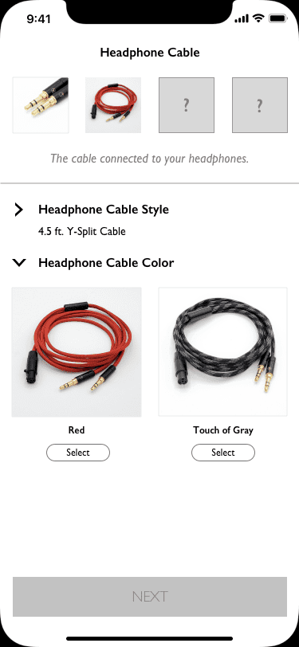
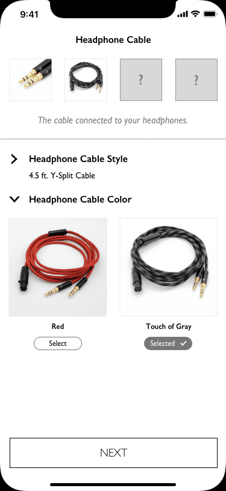
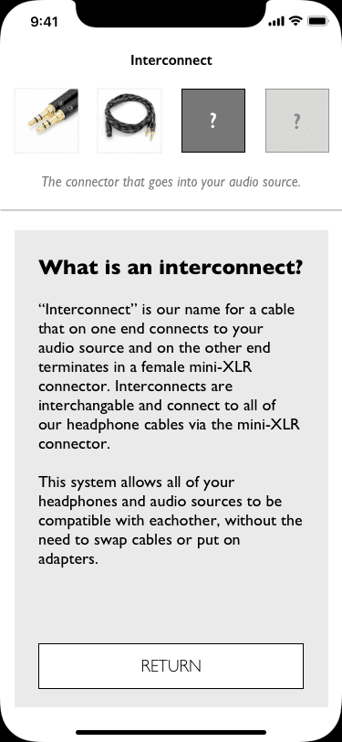
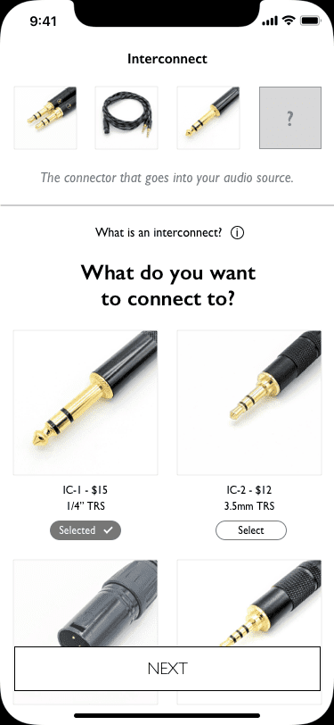
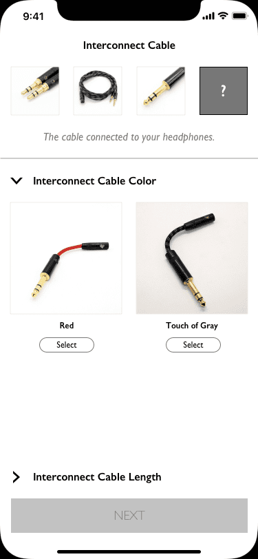
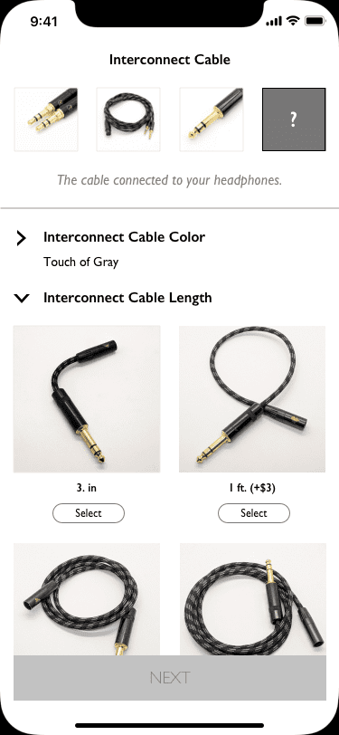
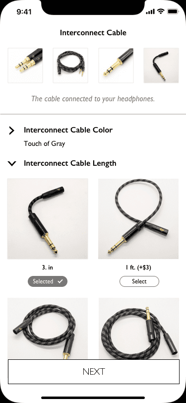
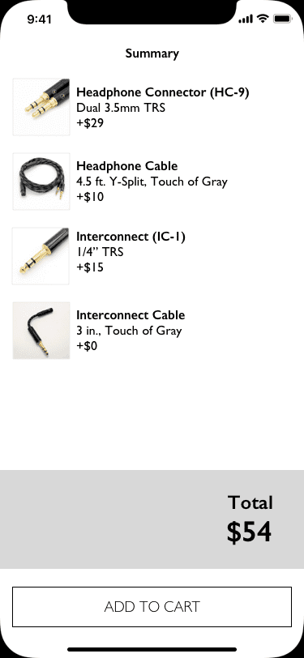
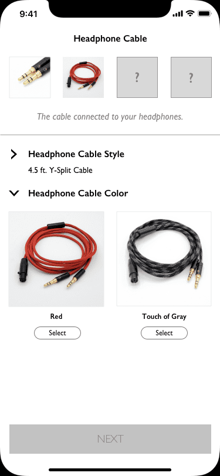
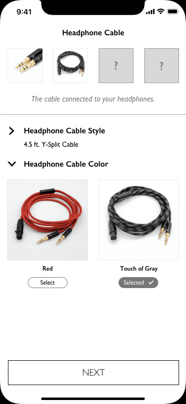
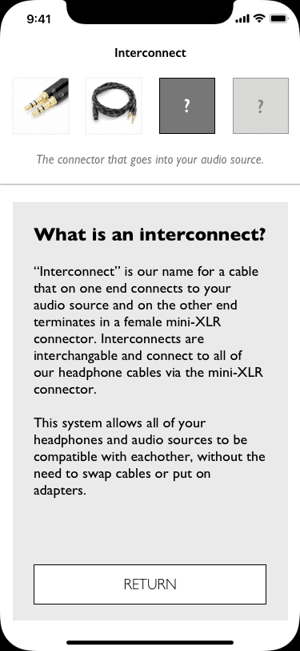
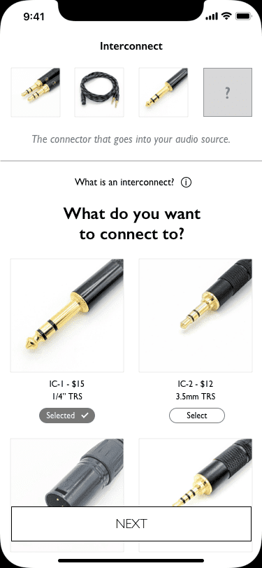
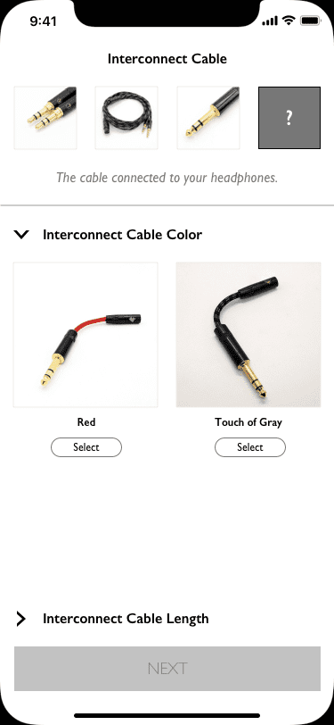
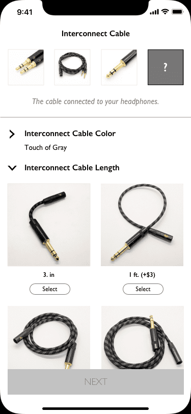
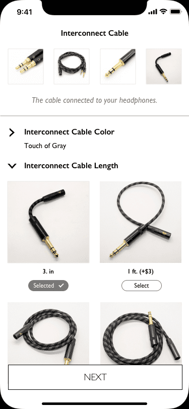
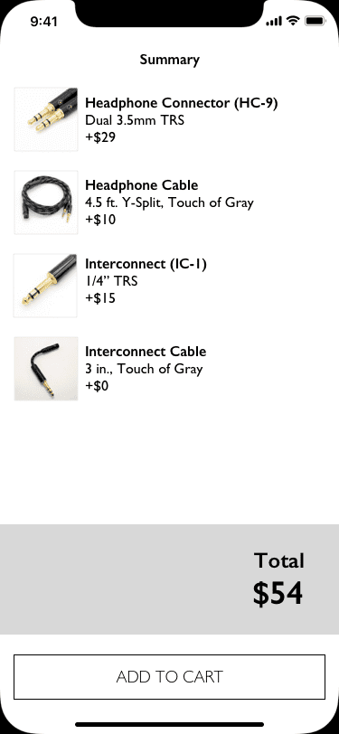
Taking feedback from low-fi prototype testing, greater emphasis was placed on interactable components--mainly greater use of buttons and common touch related gestures/symbols.
A focus was placed on reachability. Nearly all major interactable components should be within reachable distance of the thumb without the user adjusting their grip on the phone.
Complexity was reduced by only presenting the user with one decision on screen at any given time.
Explanations were provided frequently and whenever there was a new concept introduced. Examples include explanations of different cable types in the second to last screen shot, and an interconnect explanation on the last screenshot.
Results & Reflection
Five new testers were found and asked to perform the same test as those in the original user research test. Some key takaways from the new batch of testers compared to the original:
2x
More users who felt condient with their selection.
(40% vs 80%)
4x
More users who felt they understood the buying process.
(20% vs 80%)
367%
Faster average time to completion.
(11 minutes vs. 3 minutes)
Next Steps
All protoypes and testing focused on mobile workflows, so optimizing the process for tablet and desktop versions would be required going forward.
More user testing can be performed to find specific pain points and the high fidelity prototype revised to adjust for that testing.
The scope of this project focused on the main purchasing flow of hartaudiocables.com, but other parts of the website could be further optimised--such as the customer shop service.